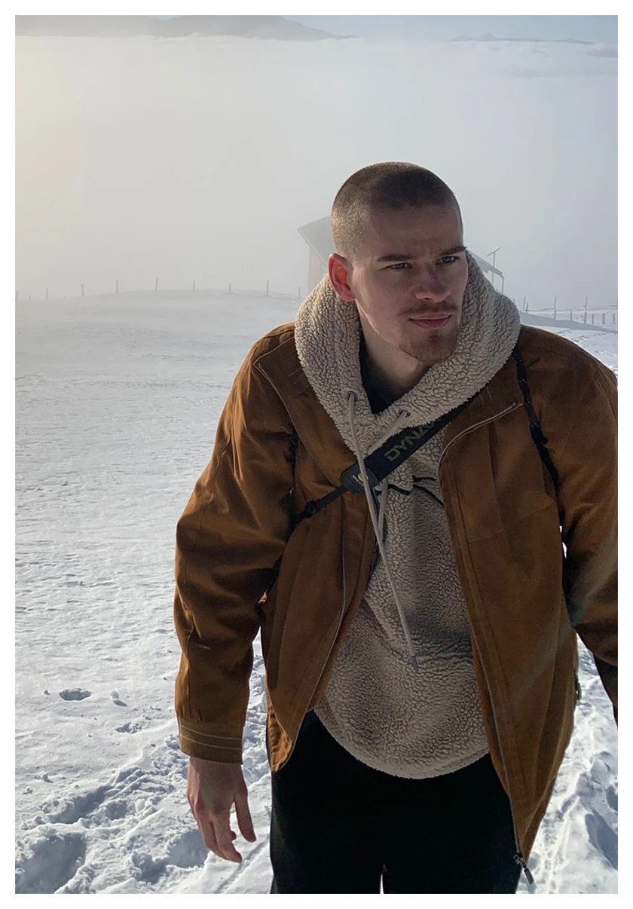

Hallo :)
Ich bin in Luzern aufgewachsen und lebe und arbeite ebenda. Illustrativ arbeite ich gerne divers. Zusammen mit meinem
geliebten Minenbleistift oder einem Ipad, frohlocke ich wenn mir ein Gesicht, eine coole Ente oder Maschinerie jeglicher Art
vor das Skizzenbuch springen. Ich bin frisch aus dem Studium und offen für neue Erfahrungen, also schreib mich doch einfach mal an.
Kontakt
Email: 0noah.widmer0@gmail.com
Instagram: @nebloa_
CV
2026: BA-Abschluss HSLU in Visual Communication mit Vertiefung Illustration Nonfiction
2022: Gestalterischer Vorkurs HSLU
2021: Matura in Luzern
2002* in Luzern
